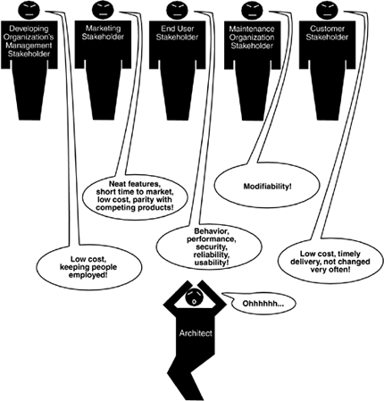
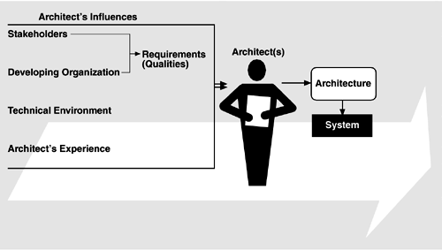
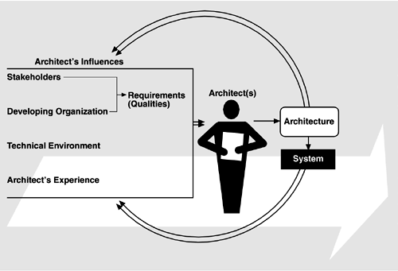

| [ Team LiB ] |
|
1.1 Where Do Architectures Come From?An architecture is the result of a set of business and technical decisions. There are many influences at work in its design, and the realization of these influences will change depending on the environment in which the architecture is required to perform. An architect designing a system for which the real-time deadlines are believed to be tight will make one set of design choices; the same architect, designing a similar system in which the deadlines can be easily satisfied, will make different choices. And the same architect, designing a non-real-time system, is likely to make quite different choices still. Even with the same requirements, hardware, support software, and human resources available, an architect designing a system today is likely to design a different system than might have been designed five years ago. In any development effort, the requirements make explicit some—but only some—of the desired properties of the final system. Not all requirements are concerned directly with those properties; a development process or the use of a particular tool may be mandated by them. But the requirements specification only begins to tell the story. Failure to satisfy other constraints may render the system just as problematic as if it functioned poorly. We begin building the ABC by identifying the influences to and from architectures. ARCHITECTURES ARE INFLUENCED BY SYSTEM STAKEHOLDERSMany people and organizations are interested in the construction of a software system. We call these stakeholders: The customer, the end users, the developers, the project manager, the maintainers, and even those who market the system are a few examples. Stakeholders have different concerns that they wish the system to guarantee or optimize, including things as diverse as providing a certain behavior at runtime, performing well on a particular piece of hardware, being easy to customize, achieving short time to market or low cost of development, gainfully employing programmers who have a particular specialty, or providing a broad range of functions. Figure 1.2 shows the architect receiving helpful stakeholder "suggestions." Figure 1.2. Influence of stakeholders on the architect Having an acceptable system involves properties such as performance, reliability, availability, platform compatibility, memory utilization, network usage, security, modifiability, usability, and interoperability with other systems as well as behavior. Indeed, we will see that these properties determine the overall design of the architecture. All of them, and others, affect how the delivered system is viewed by its eventual recipients, and so they find a voice in one or more of the system's stakeholders. The underlying problem, of course, is that each stakeholder has different concerns and goals, some of which may be contradictory. Properties can be listed and discussed, of course, in an artifact such as a requirements document. But it is a rare requirements document that does a good job of capturing all of a system's quality requirements in testable detail. The reality is that the architect often has to fill in the blanks and mediate the conflicts. ARCHITECTURES ARE INFLUENCED BY THE DEVELOPING ORGANIZATIONIn addition to the organizational goals expressed through requirements, an architecture is influenced by the structure or nature of the development organization. For example, if the organization has an abundance of idle programmers skilled in client-server communications, then a client-server architecture might be the approach supported by management. If not, it may well be rejected. Staff skills are one additional influence, but so are the development schedule and budget. There are three classes of influence that come from the developing organization: immediate business, long-term business, and organizational structure.
ARCHITECTURES ARE INFLUENCED BY THE BACKGROUND AND EXPERIENCE OF THE ARCHITECTSIf the architects for a system have had good results using a particular architectural approach, such as distributed objects or implicit invocation, chances are that they will try that same approach on a new development effort. Conversely, if their prior experience with this approach was disastrous, the architects may be reluctant to try it again. Architectural choices may also come from an architect's education and training, exposure to successful architectural patterns, or exposure to systems that have worked particularly poorly or particularly well. The architects may also wish to experiment with an architectural pattern or technique learned from a book (such as this one) or a course. ARCHITECTURES ARE INFLUENCED BY THE TECHNICAL ENVIRONMENTA special case of the architect's background and experience is reflected by the technical environment. The environment that is current when an architecture is designed will influence that architecture. It might include standard industry practices or software engineering techniques prevalent in the architect's professional community. It is a brave architect who, in today's environment, does not at least consider a Web-based, object-oriented, middleware-supported design for an information system. RAMIFICATIONS OF INFLUENCES ON AN ARCHITECTUREInfluences on an architecture come from a wide variety of sources. Some are only implied, while others are explicitly in conflict. Almost never are the properties required by the business and organizational goals consciously understood, let alone fully articulated. Indeed, even customer requirements are seldom documented completely, which means that the inevitable conflict among different stakeholders' goals has not been resolved. However, architects need to know and understand the nature, source, and priority of constraints on the project as early as possible. Therefore, they must identify and actively engage the stakeholders to solicit their needs and expectations. Without such engagement, the stakeholders will, at some point, demand that the architects explain why each proposed architecture is unacceptable, thus delaying the project and idling workers. Early engagement of stakeholders allows the architects to understand the constraints of the task, manage expectations, negotiate priorities, and make tradeoffs. Architecture reviews (covered in Part Three) and iterative prototyping are two means for achieving it. It should be apparent that the architects need more than just technical skills. Explanations to one stakeholder or another will be required regarding the chosen priorities of different properties and why particular stakeholders are not having all of their expectations satisfied. For an effective architect, then, diplomacy, negotiation, and communication skills are essential. The influences on the architect, and hence on the architecture, are shown in Figure 1.3. Architects are influenced by the requirements for the product as derived from its stakeholders, the structure and goals of the developing organization, the available technical environment, and their own background and experience. Figure 1.3. Influences on the architecture THE ARCHITECTURES AFFECT THE FACTORS THAT INFLUENCE THEMThe main message of this book is that the relationships among business goals, product requirements, architects' experience, architectures, and fielded systems form a cycle with feedback loops that a business can manage. A business manages this cycle to handle growth, to expand its enterprise area, and to take advantage of previous investments in architecture and system building. Figure 1.4 shows the feedback loops. Some of the feedback comes from the architecture itself, and some comes from the system built from it. Figure 1.4. The Architecture Business Cycle Here is how the cycle works:
These and other feedback mechanisms form what we call the ABC, illustrated in Figure 1.4, which depicts the influences of the culture and business of the development organization on the software architecture. That architecture is, in turn, a primary determinant of the properties of the developed system or systems. But the ABC is also based on a recognition that shrewd organizations can take advantage of the organizational and experiential effects of developing an architecture and can use those effects to position their business strategically for future projects. |
| [ Team LiB ] |
|